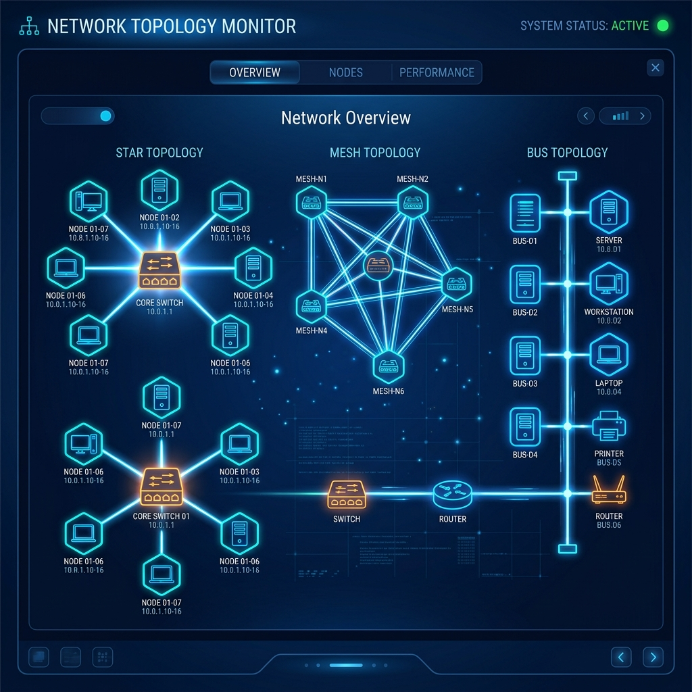
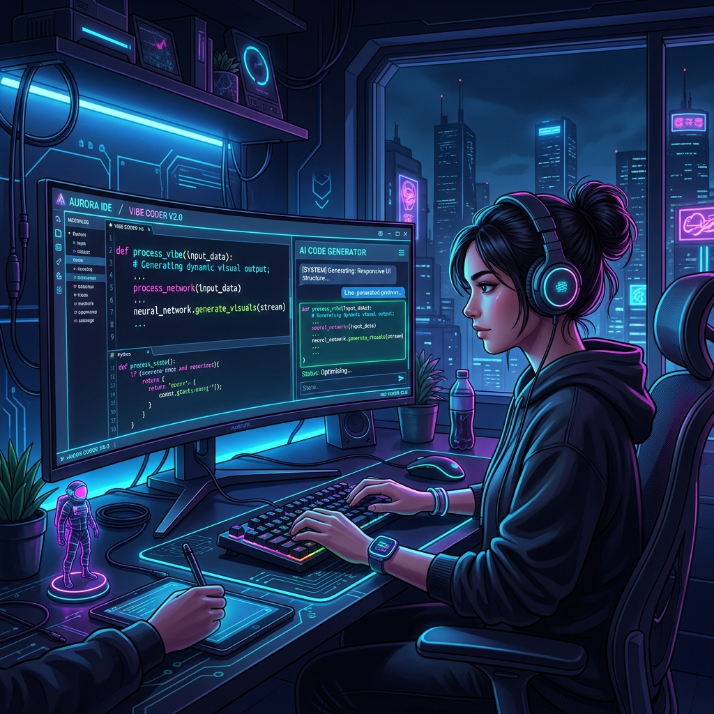

Materi Informatika
Tekan tombol judul materi di bawah ini untuk membaca artikel lengkap (4 paragraf, 5 kalimat per paragraf).
Kriptografi merupakan salah satu disiplin ilmu komputer paling fundamental yang mempelajari metode pengamanan data digital. Istilah ini berakar dari kata Yunani kryptos yang bermakna tersembunyi serta graphein yang berarti proses menulis. Konsep dasar kriptografi berfokus pada transformasi pesan biasa atau plaintext menjadi teks tersandi atau ciphertext. Penggunaan teknik pengodean rahasia ini sebenarnya telah diterapkan oleh peradaban manusia sejak ribuan tahun lalu. Di era modern, algoritma enkripsi matematika menjadi perisai utama dalam melindungi pertukaran informasi di jaringan internet.
Dalam ekosistem keamanan siber, kriptografi dirancang untuk memenuhi empat prinsip pilar utama yang sangat krusial. Pilar kerahasiaan memastikan bahwa isi informasi hanya dapat dibaca oleh pemilik kunci pembuka sandi yang sah. Pilar integritas menjamin bahwa data yang dikirim tidak mengalami perubahan atau manipulasi selama proses transmisi. Pilar autentikasi bertugas membuktikan keaslian identitas dari pihak pengirim maupun penerima informasi di dunia maya. Sementara itu pilar anti-penyangkalan mencegah seseorang untuk memungkiri transaksi elektronik yang telah dilakukannya.
Berdasarkan skema pengelolaan kuncinya, kriptografi modern secara umum dibagi menjadi sistem simetris dan asimetris. Kriptografi kunci simetris memanfaatkan satu kunci tunggal yang sama untuk proses enkripsi sekaligus proses dekripsi data. Contoh algoritma simetris yang sangat populer di industri teknologi saat ini adalah Advanced Encryption Standard atau AES. Sebaliknya kriptografi asimetris mengandalkan sepasang kunci berbeda yang terdiri dari kunci publik dan kunci privat. Algoritma RSA merupakan contoh penerapan kunci asimetris yang banyak digunakan untuk mengamankan sertifikat digital web.
Penerapan teknologi kriptografi dalam kehidupan masyarakat digital saat ini dapat ditemukan pada berbagai layanan online. Protokol HTTPS pada web browser memanfaatkan enkripsi untuk mengamankan data pribadi pengguna saat mengakses situs web. Aplikasi pesan instan modern juga menerapkan enkripsi ujung-ke-ujung agar percakapan pengguna tidak dapat disadap. Sektor perbankan elektronik dan mesin ATM sangat bergantung pada ketangguhan algoritma enkripsi untuk melindungi transaksi finansial. Kesimpulannya ilmu kriptografi adalah benteng pertahanan utama yang menjamin kenyamanan serta privasi seluruh pengguna internet.
Simulasi Interaktif: Enkripsi Caesar Cipher (Shift +3)

Topologi jaringan merupakan suatu metode atau arsitektur konseptual yang digunakan untuk menghubungkan berbagai perangkat komputer. Pemahaman mengenai tata letak jaringan ini sangat penting karena mempengaruhi alur transmisi data secara fisik maupun logis. Perancangan susunan perangkat yang tepat akan membantu meningkatkan efisiensi komunikasi data antarperangkat dalam satu jaringan. Pemilihan topologi yang sesuai juga dapat menekan biaya pengadaan kabel serta memudahkan pemeliharaan perangkat jaringan secara berkala. Oleh karena itu analisis kebutuhan instansi menjadi langkah awal yang sangat krusial sebelum membangun infrastruktur jaringan.
Terdapat beberapa jenis topologi jaringan dasar yang masing-masing memiliki karakteristik serta keunggulan tersendiri. Topologi Bus menggunakan satu kabel pusat utama sebagai jalur lalu lintas data yang sangat hemat biaya instalasi. Namun topologi Bus memiliki kelemahan utama yaitu seluruh jaringan akan lumpuh apabila kabel utama mengalami kerusakan. Sementara itu topologi Star menghubungkan setiap komputer ke satu Switch pusat sehingga membuat sistem jauh lebih stabil. Keunggulan topologi Star terletak pada kemudahan isolasi masalah karena kerusakan satu kabel tidak mengganggu perangkat lainnya.
Selain jenis dasar terdapat pula susunan jaringan yang lebih kompleks seperti topologi Ring, Mesh, dan Tree. Topologi Ring menghubungkan perangkat secara melingkar sehingga data ditransmisikan searah dari satu node ke node berikutnya. Topologi Mesh menawarkan keandalan tertinggi dengan menghubungkan setiap node secara langsung satu sama lain melalui jalur dedicated. Topologi Tree mengadopsi struktur hirarki bertingkat yang cocok diterapkan pada bangunan kantor berskala besar atau bertingkat. Penggabungan dua atau lebih jenis topologi yang berbeda dinamakan topologi Hybrid untuk memberikan fleksibilitas jaringan maksimum.
Dalam implementasi dunia nyata pemilihan jenis topologi harus disesuaikan dengan anggaran dan lokasi geografis perangkat. Laboratorium komputer di sekolah menengah umumnya memilih topologi Star karena tingkat stabilitas dan kemudahan pengelolaannya. Gedung perkantoran modern biasanya mengombinasikan topologi Tree dan Star untuk memudahkan pembagian jaringan setiap divisi kerja. Evaluasi berkala terhadap kinerja topologi sangat diperlukan agar tidak terjadi penyumbatan arus lalu lintas data. Dengan demikian perencanaan arsitektur jaringan yang matang akan menjamin kelancaran konektivitas digital dalam jangka panjang.
Cisco Packet Tracer adalah sebuah perangkat lunak simulator jaringan komputer interaktif yang dikembangkan oleh perusahaan Cisco Systems. Aplikasi ini dirancang sebagai media pembelajaran praktis bagi para siswa dan praktisi teknologi informasi di seluruh dunia. Keuntungan utama dari penggunaan simulator ini adalah memberikan pengalaman langsung merancang jaringan tanpa biaya perangkat keras fisik. Pengguna dapat bereksperimen membuat berbagai skema topologi jaringan secara virtual langsung di atas kanvas aplikasi. Media laboratorium virtual ini menjadi solusi paling efisien bagi sekolah dalam menyelenggarakan praktikum jaringan komputer berkualitas.
Fitur utama dalam Cisco Packet Tracer mencakup area kerja visual berbasis drag-and-drop yang sangat intuitif digunakan. Pengguna dapat memilih berbagai komponen jaringan asli seperti Router, Switch, Hub, Access Point, hingga kabel jaringan. Aplikasi ini juga menyediakan akses Command Line Interface atau CLI yang meniru sistem operasi Cisco IOS sesungguhnya. Melalui CLI pengguna dapat melatih keterampilan menuliskan perintah konfigurasi IP Address, Subnet Mask, dan Default Gateway. Integrasi fitur yang lengkap ini membuat pengalaman praktikum virtual terasa sangat mirip dengan kondisi peralatan asli.
Salah satu keunggulan menarik dari Cisco Packet Tracer adalah ketersediaan mode simulasi visual pengiriman paket data. Pada mode simulasi pengguna dapat melihat pergerakan amplop paket data ICMP atau Ping secara real-time antarperangkat. Mode ini sangat membantu siswa dalam memahami konsep pemrosesan protokol jaringan serta alur kerja header data. Apabila terjadi kegagalan pengiriman paket pengguna dapat langsung menganalisis titik lokasi terjadinya kesalahan konfigurasi IP. Kemampuan mendiagnosis kesalahan lalu lintas data ini secara efektif dapat melatih daya analisis logika para siswa.
Langkah awal belajar menggunakan simulator ini dimulai dari pembuatan skema koneksi dua komputer yang sangat sederhana. Setelah menguasai konsep dasar siswa dapat melangkah ke tahap perancangan jaringan lokal LAN dan jaringan luas WAN. Meskipun sangat bermanfaat simulator ini memiliki keterbatasan perintah CLI yang tidak sekomplit perangkat keras fisik asli. Namun demikian pengetahuan praktis yang didapat dari aplikasi ini menjadi bekal berharga untuk persiapan sertifikasi CCNA. Secara keseluruhan Cisco Packet Tracer merupakan sarana edukasi terbaik untuk membangun fondasi karier di bidang jaringan.

Vibe Coding merupakan paradigma baru dalam dunia pemrograman yang mengombinasikan kreativitas pengembang dengan kecanggihan kecerdasan buatan. Istilah ini menggambarkan gaya pengembangan aplikasi di mana pengembang berfokus pada visi, logika, dan prompt bahasa alami. AI Agent bertindak sebagai asisten pemrogram cerdas yang mengeksekusi instruksi dan memproduksi baris kode secara real-time. Pendekatan modern ini mengubah cara kerja tradisional yang sebelumnya sangat bergantung pada penghafalan sintaksis kode rumit. Dengan demikian Vibe Coding memungkinkan pembuatan aplikasi produk digital berlangsung dengan jauh lebih cepat dan intuitif.
Karakteristik utama dari Vibe Coding terletak pada penggunaan prompt instruksi berbasis intent atau tujuan akhir pengguna. Pengembang tidak perlu lagi menuliskan ribuan baris kode boilerplate secara manual dari awal pembuatan proyek baru. Cukup dengan memberikan instruksi deskriptif mengenai tampilan UI serta alur logika aplikasi yang diinginkan kepada AI. AI Agent akan secara otomatis menganalisis konteks perintah lalu menyintesis struktur HTML, CSS, dan JavaScript terkait. Proses ini memangkas waktu pengembangan dari yang semula memakan waktu berminggu-minggu menjadi hanya hitungan menit.
Alur kerja dalam Vibe Coding mengandalkan proses iterasi cepat antara arahan pengembang dan hasil generasi kecerdasan buatan. Pengembang mengulas pratinjau aplikasi yang dihasilkan kemudian memberikan umpan balik perbaikan kepada asisten AI Agent. Perubahan desain maupun penambahan fitur baru dapat langsung diterapkan oleh AI secara otomatis berdasarkan prompt perbaikan. Efisiensi ini memungkinkan tim pengembang untuk lebih fokus pada pengalaman pengguna serta inovasi fitur utama aplikasi. Hasilnya produk perangkat lunak dapat diuji coba dan dirilis ke pasar dalam durasi waktu yang sangat singkat.
Tren Vibe Coding kini menjadi landasan penting dalam perkembangan pendidikan teknologi informasi di era cerdas saat ini. Para siswa sekolah dapat dengan mudah menyalurkan ide kreatif mereka menjadi prototipe aplikasi web yang fungsional. Meskipun demikian pemahaman dasar logika algoritma dan arsitektur sistem tetap menjadi fondasi yang harus dikuasai. Kolaborasi harmonis antara daya cipta pemikiran manusia dan kecepatan eksekusi AI merupakan kunci utama masa depan. Kesimpulannya Vibe Coding membuka era baru dalam rekayasa perangkat lunak yang lebih demokratis, inklusif, dan menyenangkan.
Simulasi Interaktif Vibe Coding (Prompt to Code & App Pratinjau)
Masukkan ide fitur (contoh: "Buat kalkulator diskon" atau "Buat tombol interactive") untuk melihat bagaimana Vibe AI menggenerasi kode dan pratinjau aplikasinya.